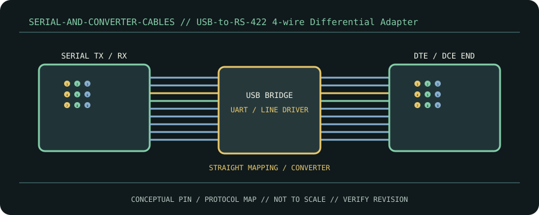

[ CABLE / ADAPTER RECORD // EIA/TIA-422 FOUR-WIRE FULL DUPLEX ]
USB-to-RS-422 4-wire Differential Adapter
USB converter has distinct differential TX and RX pairs, unlike 2-wire half-duplex RS-485.

CLASSIFICATION: Serial and converter cables. Identify protocol, direction, pinout and exact cable revision before connection.
Interface and capability
| Standard / protocol | EIA/TIA-422 four-wire full duplex. Connector appearance alone does not establish compatibility. |
|---|---|
| Endpoint / pinout | USB converter has distinct differential TX and RX pairs, unlike 2-wire half-duplex RS-485. |
| Capability / limits | Rate/reach depend on cable, transceiver loading and topology; use manufacturer’s bitrate-distance curve, not a single blanket limit. |
| Certification / length | Standards define interface requirements, not every assembly’s performance. Certification, mode, current/power rating, direction and maximum length belong to the exact product/revision and complete channel; verify its manufacturer specification. Do not infer certification from connector shape or marketing terminology. |
Compatibility & handling
- Vendor A/B nomenclature varies. Preserve pair polarity and termination; do not tie TX/RX pairs together as for a 2-wire bus.
- Inspect connector keying, latch, contact condition, shielding, jacket and model/revision marking. Stop if contacts are bent, loose, scorched, corroded or mismatched.
- Route without tension or sharp bends; follow product bend-radius, strain-relief, current and environmental limits. Test at the intended protocol and mode—physical fit is not a compatibility test.
Sources & further reading
- TIA-422 StandardsPrimary standards-body or manufacturer reference for EIA/TIA-422 four-wire full duplex; confirm exact cable assembly, certification and revision.